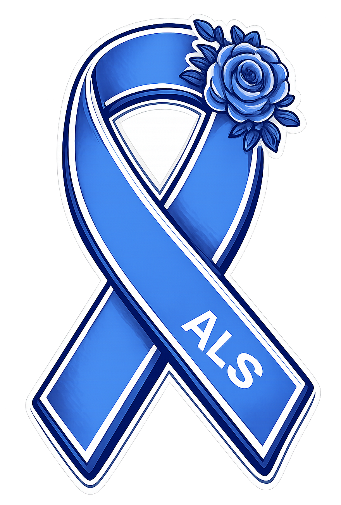

Living Fully, Living Well
Welcome! Palliative care is specialized medical care for people living with a serious illness. This type of care is focused on providing relief from the symptoms and stress of the illness. The goal is to improve quality of life for both patients and their families (CAPC).
This website was developed by a clinician-led team from Johns Hopkins, in partnership with experts from the International Neuropalliative Care Society (INPCS) ALS Working Group, with the goal of providing a centralized, accessible, and clinician-curated ALS palliative care resource navigator. On each page, you'll find recommended resources that were selected by experts as a good starting place. To begin, click on a button below.
